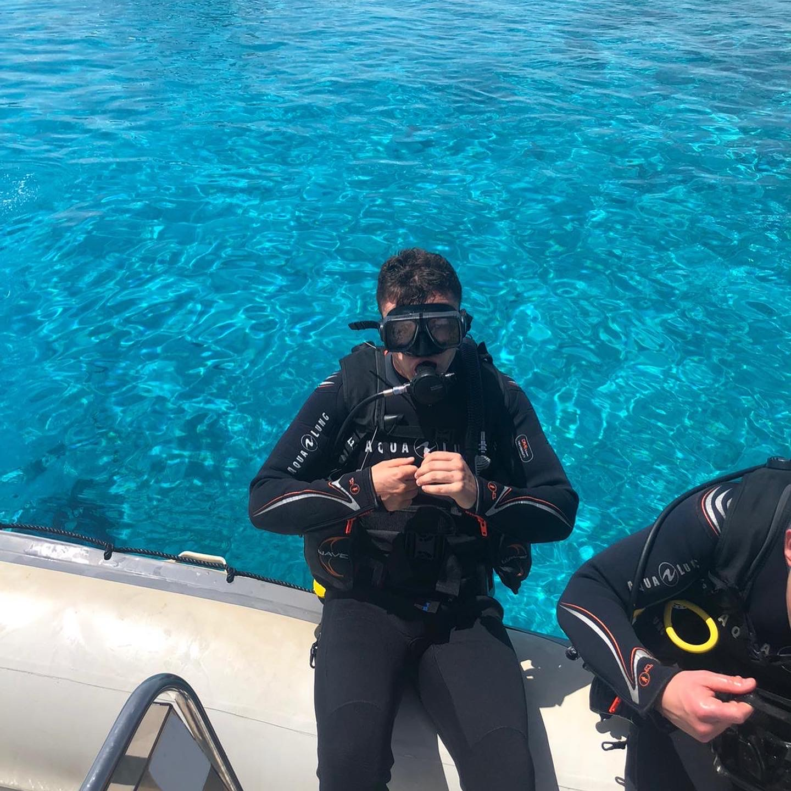
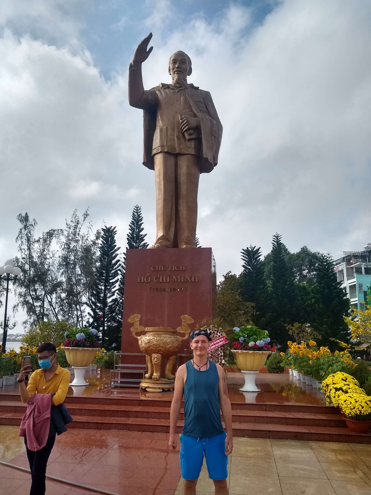
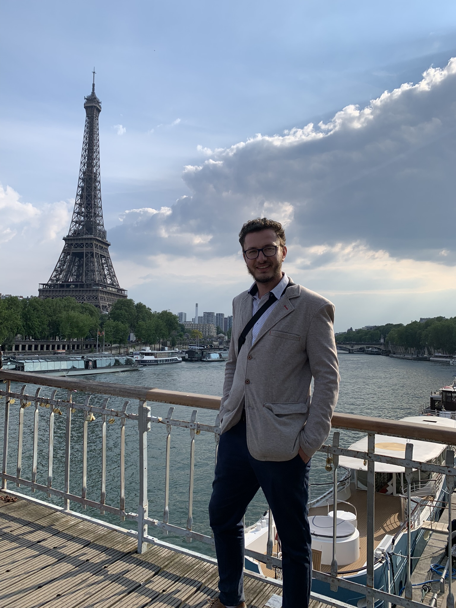
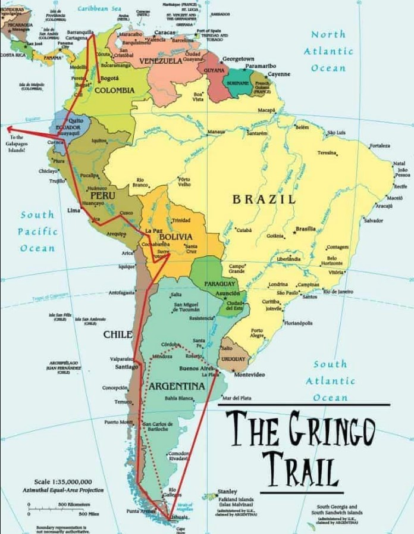
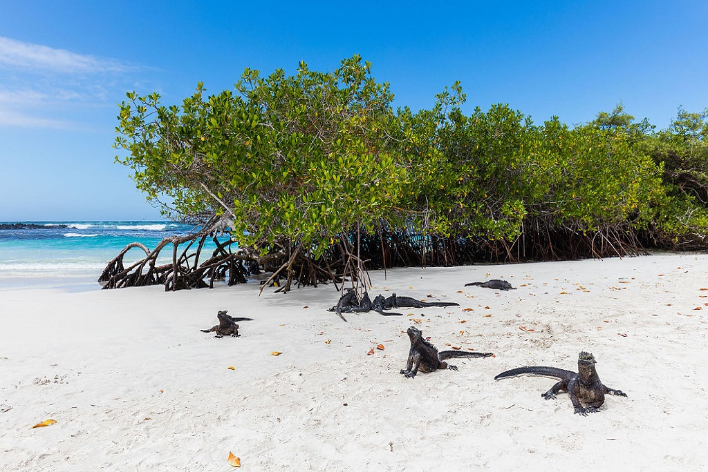

Hej !!!!! Poniżej znajdziecie pokrótce opisane czym się zajmowałem w życiu dotychczas...
Nazywam się Wojciech, aktualnie uczę się hobbystycznie programowania, kto wie, może kiedyś zmienię
branżę.
Bardzo lubię podróżować po świecie, byłem już w takich krajach jak:Egipt, Tunezja, Vietnam,
Tajlandia,
Kambodża.
Z tych wszystkich miejsc w których byłem najlepiej wspominam rejon Azji południowo-wschodniej, spędziłem
tam
4 miesiące,
najpierw pracowałem w szkole, a potem jeździłem skuterem zwiedzając jak najwięcej się dało. W
tajlandii
spędziłem w sumie
4 tygodnie, pierw byłem w Bangkoku, następnie udałem się pociągiem na północ kraju i zwiedzałem górzysty
region na motorze.
Odwiedziłem dodatkowo centrum medytacyjne, uczyłem się gotować kuchnii tajskiej, ale języka nigdy nie
planowałem się nauczyć.
Chcialbym się jeszcze wybrać w takie miejsca jak Peru, Chile, Meksyk, Panama a potem zakończyć
etap
podróżowania i
skupić się na innych elementach życia.
Robiłem jeszcze w życiu inne ciekawe rzeczy
Ćwiczyłem kiedyś sztuki walki w Berlinie, uczyłem angielskiego dzieci i dorosłych w
Vietnamie,
Przebywałem w ośrodku medytacji w Tajlandii, pracowałem jako kierownik na budowie Tunelu w południowych
Niemczech.
W wolnym czasie staram się ćwiczyć sport, relaksować i medytować
Poniżej wstawiam kilka zdjęć z miejsc w których byłem

To JA podczas nurkowania w Egipcie

Moja pierwsza podróż do Azji

Wycieczka na wesele do kumpla w Paryżu
Powyższa fotka była robiona w Parku Rozrywki "Europapark" w Niemczech
To zdjęcie z czasów gdy pracowałem w Niemczech jako kierownik budowy tunelu
Co dalej ??
Kolejnym projektem jaki w życiu chcę wykonać jest kilku miesięczna podróż po krajach
ameryki centralnej i południowej. Przygotowuję się aktualnie fizycznie, psychicznie i finansowo do tego dużego
projektu,
jak również uczę się języka Hiszpańskiego aby móc się swobodnie poruszać w nowym miejscu.
Lista rzeczy potrzebnych na kolejny projekt podróżniczy który chcę zrealizować
Liczba pojedyńcza
Rzecz
Czy już posiadam
Cena $
1
Maska do Nurkowania
TAK
20
2
Dron
TAK
500
3
Plecak Turystyczny
NIE
100
4
Bilety wstępu
NIE
100
5
Bilety lotnicze
NIE
1000

To jest mapa wskazująca trasę jaką chcę pokonać
GALAPAGOS
Na końcu strony chciałbym wam opisać miejsca które planuję zwiedzić:
Na pewno w roku 2023 chcę odwiedzić wyspę Galapagos, czyli archipelag pochodzenia wulkanicznego na Oceanie
Spokojnym, na wysokości równika, ok. 1000 km na zachód od wybrzeża
Ameryki Południowej. Wyspy należą do Ekwadoru, a ich powierzchnia wynosi ok. 8 tys. km².
Hiszpańska nazwa „Archipiélago de Galápagos” albo „Islas Galápagos” pochodzi od słowa „galápago” oznaczającego
żółwia,
co wiąże się z zamieszkującymi wyspy żółwiami słoniowymi. Raport odkrywcy wysp Tomása de Berlangi, w którym
opisano
żółwie „galápagos” posłużył jako źródło informacji dla flamandzkiego kartografa Abrahama Orteliusa, który nowe
wyspy
nazwał „Insulae de los Galápagos” i umieścił na mapie Orbisterrarum opublikowanej w 1574 roku. Także w latach
70. XVI
wieku wyspy pojawiły się jako „Insulae de los Galápagos” na mapie drugiego flamandzkiego kartografa
Merkatora.
Najnowsza historia Wysp Żółwich rozpoczęła się w 1959 roku, gdy powstał Park Narodowy
Galapagos, chroniący ponad
97%
obszaru archipelagu. Do ochrony wysp w 1959 roku została założona na prawie belgijskim Fundacja Karola
Darwina, a w
1964 roku w Puerto Ayora na wyspie Santa Cruz założono Stację Badawczą im. Karola Darwina. W 1965 roku
zapoczątkowano program repatriacji żółwi słoniowych, a w 1971 roku odkryto „Samotnego George’a”. W 1984
roku Park
Narodowy Galapagos został ogłoszony rezerwatem biosfery UNESCO.
Od 1978 roku wyspy znajdują się na liście światowego dziedzictwa UNESCO, w 2001 roku wpis został poszerzony
przez
włączenie rezerwatu morskiego.

Zwierzęta żyjące na wyspie Galapagos
Na pewno podczas swojej podróży chcę odwiedzić starożytną świątynię inków w Peru, czyli Machu Picchu.
Jest to najlepiej zachowane miasto kultury Inków położone ok. 100 km na północny-zachód od miasta Cuzco
w
południowej części Peru. Znajduje się na wysokości 2400 metrów nad poziomem morza, a jego nazwa w języku Quechua
oznacza
„Stary Szczyt” lub „Starą Górę”. Zaginione miasto Inków uznawane jest za najważniejsze miejsce archeologiczne w
Ameryce
Południowej. Stanowi także częsty przedmiot zainteresowania turystów.